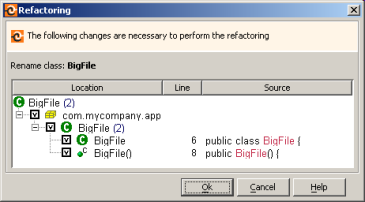

Before performing a Rename function, RefactorIT lists all places in the source path that need to be changed. You can review the impact and also select which occurrences should be renamed; by default all occurrences are renamed.
